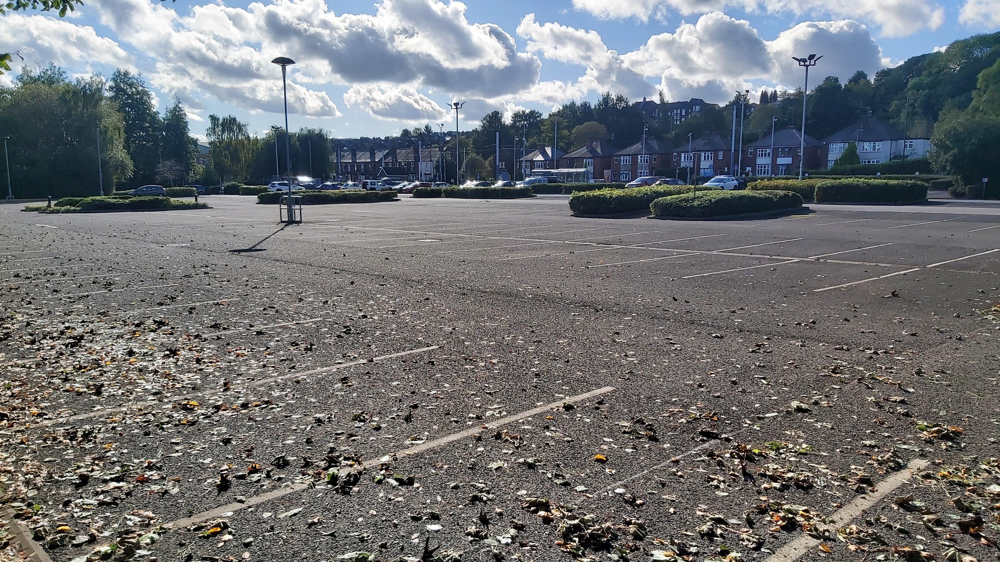
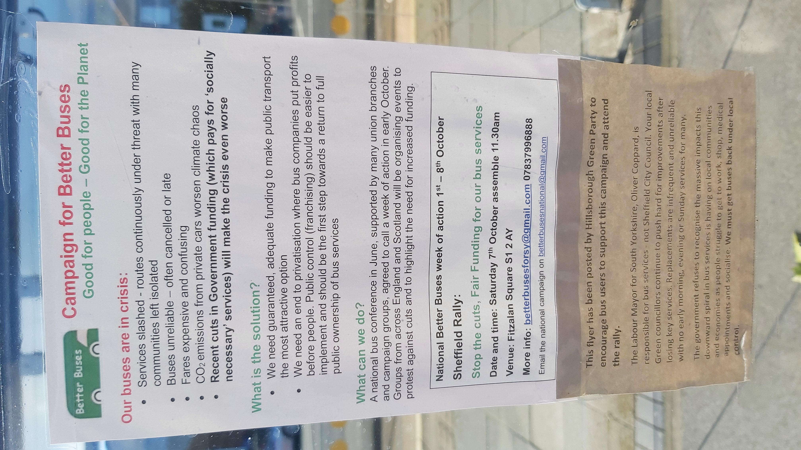
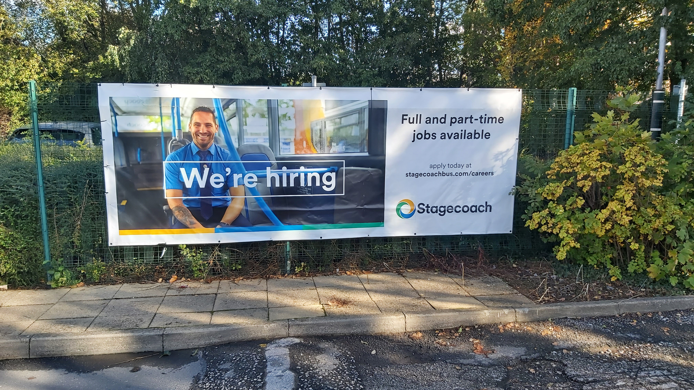
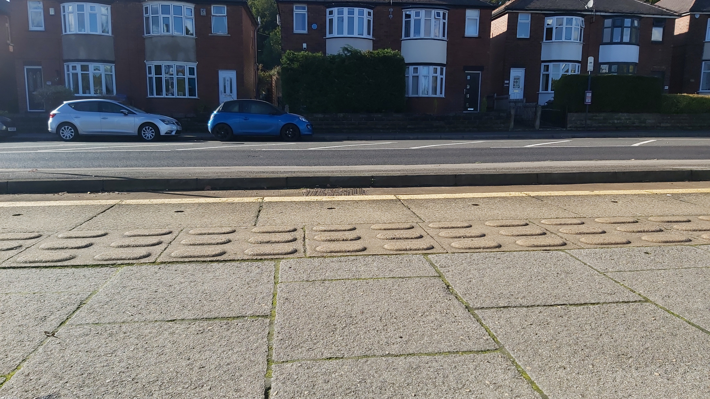

The Sheffield Supertram has three routes, Blue, Yellow, and Purple, and the Tram-Train.
The Yellow Route terminates at Middlewood and
Meadowhall Interchange, and the Blue Route at
Malin Bridge and Halfway. The Purple and Tram-Train services
both start in the city centre at Cathedral, with the Purple
ending at Herdings Park, and the Tram-Train going onto
National Rail to make it to Rotherham Central.
Middlewood
Middlewood is the northern terminus of the Yellow Line, out past Hillsborough. It has a single
line for trams to park next to the roadway, with space for two trams to sit in line.
The tram line runs along Middlewood Road A6102, but deviates off it for terminating trams.
This terminating point is before, but a short walk from, the town of Middlewood, which is more
or less the edge of the built-up Sheffield area, although linear settlement continues along
the A6102.
If you're on board a Yellow Route tram, the stop will be referred to as Middlewood Park & Ride,
and Middlewood does not disappoint - a reasonably large car park awaits you, with free parking.
There seems to be no rule that you have to use it a park-and-ride, I suppose you could walk
into Hillsborough or Middlewood.
I visited it around 12pm on a clear, sunny Sunday in October.

The car park in its entirity. Behind the fence at the back is Sheffield
Wednesday's training ground, not in use when I peeked over it.
This looks like it'll stop a tram.The buffer stop from the rear, accidentally taken in portrait mode.
Interesting to see the rails not buried in Tarmac.

This flyer is sadly evocative of what's going on around Sheffield - bus services are being cut,
and tram fares increasing. The response of the authorities seems to be blame-shifting: from
the City Counil to the South Yorkshire Combined Authority, to Westminster.

This guy kinda scares me.

This isn't a low shot for artistic effect, moreso that SYMCA is allergic to putting
some half-decent seating at their bus and tram stops.
Overall, Middlewood seems to do its job as a small park-and-ride well, people were using it as such,
even on a quiet Sunday lunchtime. It seems a logical place to end the line, with room to constructed
the siding necessary, although there isn't much to do up there but wait for the tram back - most
people have got off already. It does serve some nearby low-rise council blocks,
as well as more suburban residential developments across the road.
 Middlewood is the northern terminus of the Yellow Line, out past Hillsborough. It has a single
line for trams to park next to the roadway, with space for two trams to sit in line.
The tram line runs along Middlewood Road A6102, but deviates off it for terminating trams.
This terminating point is before, but a short walk from, the town of Middlewood, which is more
or less the edge of the built-up Sheffield area, although linear settlement continues along
the A6102.
Middlewood is the northern terminus of the Yellow Line, out past Hillsborough. It has a single
line for trams to park next to the roadway, with space for two trams to sit in line.
The tram line runs along Middlewood Road A6102, but deviates off it for terminating trams.
This terminating point is before, but a short walk from, the town of Middlewood, which is more
or less the edge of the built-up Sheffield area, although linear settlement continues along
the A6102.